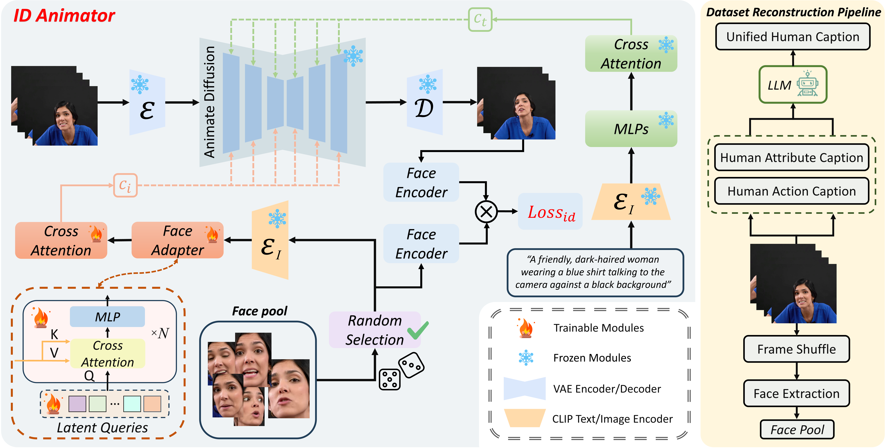

About Me
I am currently a Ph.D. student in Computer Science and Engineering at HKUST, advised by Prof. Qifeng Chen. Previously, I obtained my M.S. from USTC, working with Prof. Jie Zhang and Chengjun Xie. I received my B.Eng. degree from Xiamen University in 2022, where I conducted research at the MOCOM Lab under the guidance of Prof. Yongxuan Lai.
My research passion lies in Generative AI. Specifically, I focus on building controllable and physics-consistent World Models for video generation. I also have extensive experience in low-level vision tasks such as image restoration.
News
Nov 2025
Four papers accepted to AAAI 2026.
Sep 2025
Started my Ph.D. journey at HKUST.
Sep 2025
Joined Meituan as a Research Intern.
May 2025
Released two video editing papers on arXiv: FullDiT2 and UNIC.
Feb 2025
Joined Kuaishou Kling AI as a Research Intern.
Feb 2025
GameGen-X accepted to ICLR 2025!
Oct 2024
Released GameGen-X, an interactive open-world game video generation model.
Oct 2024
Completed research internship at Tencent.
May 2024
Released ID-Animator, a zero-shot identity-preserving video generation model.
Apr 2024
Joined Tencent as a Research Intern.
Selected Publications
Video Generation & World Models


Low-level Vision


Experience

Meigen, Meituan
Research Intern · Topic: Video Avatar and World Model · Mentor: Yong Zhang
Sep 2025 - Present
Kling AI Team, Kuaishou
Research Intern · Topic: Video Editing · Mentor: Quande Liu
Feb 2025 - Aug 2025

LightSpeed, Tencent Inc
Research Intern · Topic: Intercative Video Generation · Mentor: Quande Liu
Apr 2024 - Oct 2024

Baidu Inc
CV Engineer Intern · Topic: Video Generation
Nov 2023 - Mar 2024

Horizon Robotics
Research Intern · Topic: Low-level Vision · Mentor: Guoli Wang.
Jun 2023 - Nov 2023
Awards
- Outstanding Graduate, USTC (2025)
- National Scholarship, USTC (2023, 2024)
- Yuequn Scholarship for Academic Excellence, USTC (2023)